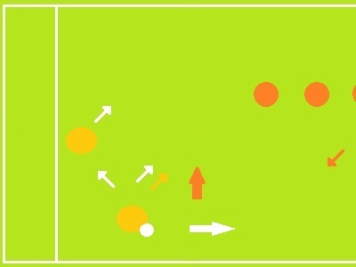
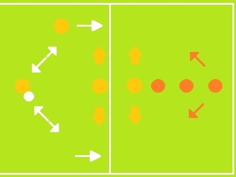

En la zona de armado 1 se prefiere salir con los jugadores en posición de cortadores
El armador más cercano al disco (que realiza el primer pase) debe preferiblemente salir a la zona de paneo lateral.
El manejador restante puede entonces acercarse a la posición de balance.
---------------------------- ZONA 2 ----------------------------Sin embargo, en la zona de armado 2, se opta por la movilidad entre los armadores
Es por lo anterior que en la segunda zona se tienen 3 armadores para permitir untra triangulación agresiva con constante amenaza de atacar la zona de gol.
---------------------------- ZONA 1 ----------------------------
---------------------------- ZONA 2 ----------------------------
